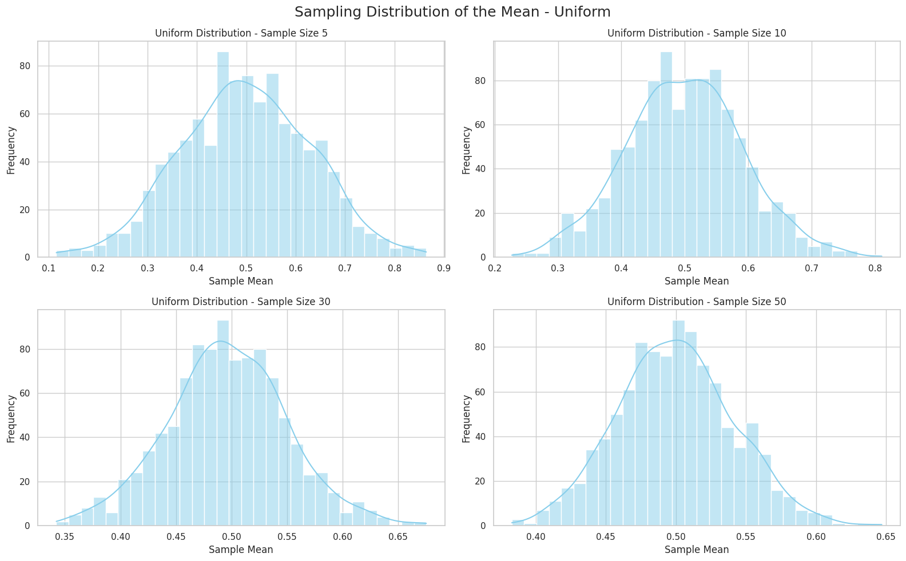
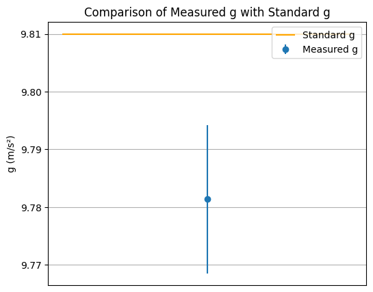
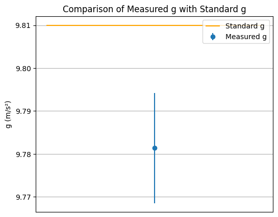

Problem 1
🧪 Central Limit Theorem (CLT) – Simulation and Explanation
🧠 What is the Central Limit Theorem?
The Central Limit Theorem (CLT) states:
If we take many random samples from any population, the means of those samples will form a normal distribution as the sample size increases.
📚 Key Definitions
1. Population
The full set of data we want to study.
2. Sample
A smaller part taken from the population.
3. Sample Mean
If the sample values are:
\[
x_1, x_2, \dots, x_n
\]
Then the sample mean is:
\[
\bar{x} = \frac{x_1 + x_2 + \dots + x_n}{n}
\]
4. Sampling Distribution
The distribution of sample means from many random samples.
5. Normal Distribution
The classic "bell curve" that is symmetric around the mean.
🔍 Goal of the Simulation
- Show how sample means become normally distributed.
- Use different population types:
Uniform,Exponential,Binomial. - Explore how sample size affects the shape of the sampling distribution.
Simulation Steps
- Create three population types (10,000 values each):
- Uniform: all values are equally likely.
- Exponential: many small values, few large ones.
-
Binomial: success/failure (0 or 1 outcomes).
-
Take random samples of sizes:
-
\[n = 5, 10, 30, 50\]
-
Repeat 1,000 times, calculate the mean each time.
-
Plot histograms of the sample means.
📊 Expected Results (Graph Interpretation)
- For small sample sizes (e.g., 5), the shape of the sampling distribution is irregular and often reflects the shape of the original population.
- As the sample size increases (e.g., 30 or 50), the distribution of the sample means becomes more bell-shaped, closely resembling a normal distribution.
- This behavior occurs regardless of the shape of the original population distribution (uniform, exponential, binomial, etc.).
💻 Python Simulation Code

 

import numpy as np
import matplotlib.pyplot as plt
import seaborn as sns
sns.set(style="whitegrid")
uniform_population = np.random.uniform(0, 1, 10000)
exponential_population = np.random.exponential(1, 10000)
binomial_population = np.random.binomial(n=1, p=0.5, size=10000)
populations = {
'Uniform': uniform_population,
'Exponential': exponential_population,
'Binomial': binomial_population
}
sample_sizes = [5, 10, 30, 50]
for name, population in populations.items():
plt.figure(figsize=(16, 10))
for i, size in enumerate(sample_sizes, 1):
sample_means = []
for _ in range(1000):
sample = np.random.choice(population, size=size)
sample_means.append(np.mean(sample))
plt.subplot(2, 2, i)
sns.histplot(sample_means, bins=30, kde=True, color="skyblue")
plt.title(f"{name} Distribution - Sample Size {size}")
plt.xlabel("Sample Mean")
plt.ylabel("Frequency")
plt.suptitle(f"Sampling Distribution of the Mean - {name}", fontsize=18)
plt.tight_layout()
plt.show()